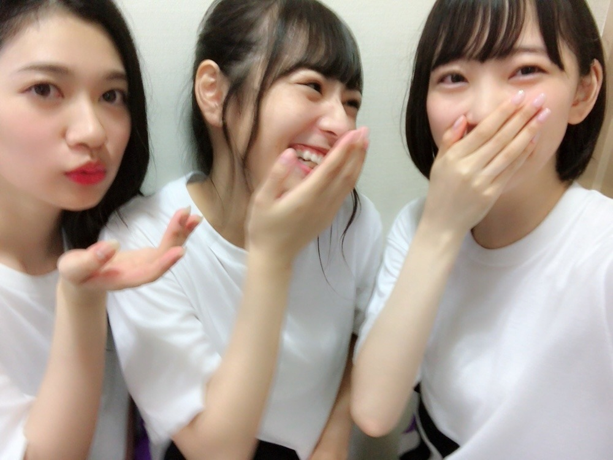

2018/0710Tueみえているもの
バースデーライブ
3日間無事完走いたしました！！！

久しぶりのこの3人！ ワタボコリ〜
久しぶりに日奈子と一緒にライブができて
なんていうんだろう
なんかね、嬉しかったです！
ツアーも楽しみ。
ショートヘアにしてから久しぶりのライブでしたが、
見つけやすかったという感想を友人からいただき
良かったなぁとo(^▽^)o
皆さんも、見つけられましたか？？

私はできる限り目を凝らして
タオルやうちわやサイリウムを
探しました(^-^)
嬉しかったです！
ステージからよく見えます！ありがとう！
ダンスパフォーマンスとか
新曲披露とか 2会場同時開催とか
自転車乗ったりとか
色んな試みをしました。
正直今回はリハーサルに参加できる日がほぼ無くて
不安と焦りもあったけど
自分なりに全力を尽くしました。
見に来てくださる皆さんの笑顔と
歓声が嬉しくて...
ツアーも楽しみにしとってね！
そして伊織とちはるさんは
最後のライブでした。
今まで本当にお疲れ様でした！
本番前、伊織とお話ししたときに
寂しいっていう気持ちを圧し殺しながら
楽しもうねって言ったんですけど
やっぱり凄く寂しくて。
でも伊織がこれからもあの笑顔で
楽しくしていてくれたら
それでいいって思いました！
写真集1番好きって言ってくれたの
めちゃくちゃ嬉しかった（ ｉ _ ｉ ）
大好きだよ〜伊織。
お互い頑張ろう！
卒業しても2人はずっとメンバーで、仲間です。
出会えてよかった！


昔から浴衣とかお着物が好きで
毎年浴衣は新調しています...
オレンジ x 白のこの浴衣
サイリウムカラーで帯は好きな水色で
お気に入りの浴衣♪
夏〜
暑さの中にもいろんな発見を探して
学びの多い
準備にふさわしい夏にしたいです！
変わりゆくものに追いつかないと
受け入れないと
変わらないと
だね。
ザンビ プロジェクト わくわく。
まだ秘密〜！
では(^-^)
2018/07/10 11:06
コメント(583)
みおな〜♪
こんばんはっ！
蝉が鳴き始めたら
本格的に夏がやってきた
感じがするね〜
西日本での集中豪雨による災害
甚大な被害が出ているみたいで
ニュースを見る度、心が痛みます
ずっきゅん依存症の知り合いにも
バスラに来れなかった人もいて
被災地の人々に一日もでも早い
心の癒しと平安が訪れますように
そして、今回の災害で犠牲になられた方の
ご冥福をお祈り申し上げます
ずっきゅん依存症も
乃木坂ファンとして
もし、何か出来ることがあれば
労を厭わないつもりなので
公式サイトやブログで教えてね
よろしくお願いします
こんばんはっ！
蝉が鳴き始めたら
本格的に夏がやってきた
感じがするね〜
西日本での集中豪雨による災害
甚大な被害が出ているみたいで
ニュースを見る度、心が痛みます
ずっきゅん依存症の知り合いにも
バスラに来れなかった人もいて
被災地の人々に一日もでも早い
心の癒しと平安が訪れますように
そして、今回の災害で犠牲になられた方の
ご冥福をお祈り申し上げます
ずっきゅん依存症も
乃木坂ファンとして
もし、何か出来ることがあれば
労を厭わないつもりなので
公式サイトやブログで教えてね
よろしくお願いします
みおな、こんばんは。更新ありがとう！ ３日間頑張りましたね、お疲れ様でした。 でも夏はこれからですね！ 暑い季節体調崩さないように残りのツアーも楽しんで下さい！ では、毎日みおなに良いこと沢山ありますように！ おやすみおな！！
バースデーライブ、三日間本当にお疲れ様。
俺が次ライブ行くのは、宮城だよ。
今からすっごく楽しみにしているよ。
俺が次ライブ行くのは、宮城だよ。
今からすっごく楽しみにしているよ。
未央奈さん、こんばんは。
ライブ、大雨や暑さの中、無事終了おめでとうございます。
ちーちゃん、伊織さんは乃木坂の卒業生ですのでこれからもずっと一緒です。なのでお二人をずっと応援していきましょう。
ライブ、大雨や暑さの中、無事終了おめでとうございます。
ちーちゃん、伊織さんは乃木坂の卒業生ですのでこれからもずっと一緒です。なのでお二人をずっと応援していきましょう。
堀ちゃん浴衣めっちゃかわいいね！！
ライブ見に行ったよ！！堀未央奈！！っていっぱい叫んだけど聞こえたかな？（笑）
ライブ見に行ったよ！！堀未央奈！！っていっぱい叫んだけど聞こえたかな？（笑）
こんばんは。
神宮&秩父宮3日お疲れさまでしたね。
湿疹はその後、大丈夫ですか？
自分は6日の神宮だけの参戦でしたが、初ライブ未だに興奮冷めやらぬです。
ショートだから、確かに分かり易かったですよ。
堀さんがスタンドを見てる様子だったので、慌ててサイリウム振りましたが、遅かったようでした。。
堀さんの虜になって比較的日が浅い自分は、まだまだ認められる資格を有しないと、自分を戒めました。
でもあの雨の中、「裸足でsummer」を笑顔で弾けてくれるのを見たら、モヤモヤも忘れ凄く元気が出ました。
沢山書きたい事だらけですが、長過ぎだと飽きられそうで、簡潔に言えば、最高でした！堀さん最高！！
帰りは、ライブ前に堀さんが、数種類の中でカレーを食べてたので、自分も食べて帰りました。
合羽着てたとはいえ、湿った身体には、有難い位に温まり美味しかったです。
伊織さん、ちはるさんとの最後のライブ、楽しめたようですね。良き思い出になるかな。
オレンジ好きです、ゴッホのひまわりを連想しませんか？
あと青系、水色も好きです。
明日は、水色のシャツを着ます。
サマーウォーズ、自分は夏になる度に、何回か観るといった夏の風物詩になっています。
子供の頃、親戚の農家で食べたトウモロコシを思い出します。
変化を恐れず、難関を避けずに、日々が成長の糧。
かなり長くなり、疲れましたらごめんなさい。
いつかまたライブ行きたいです。
頑張って行きましょう！
神宮&秩父宮3日お疲れさまでしたね。
湿疹はその後、大丈夫ですか？
自分は6日の神宮だけの参戦でしたが、初ライブ未だに興奮冷めやらぬです。
ショートだから、確かに分かり易かったですよ。
堀さんがスタンドを見てる様子だったので、慌ててサイリウム振りましたが、遅かったようでした。。
堀さんの虜になって比較的日が浅い自分は、まだまだ認められる資格を有しないと、自分を戒めました。
でもあの雨の中、「裸足でsummer」を笑顔で弾けてくれるのを見たら、モヤモヤも忘れ凄く元気が出ました。
沢山書きたい事だらけですが、長過ぎだと飽きられそうで、簡潔に言えば、最高でした！堀さん最高！！
帰りは、ライブ前に堀さんが、数種類の中でカレーを食べてたので、自分も食べて帰りました。
合羽着てたとはいえ、湿った身体には、有難い位に温まり美味しかったです。
伊織さん、ちはるさんとの最後のライブ、楽しめたようですね。良き思い出になるかな。
オレンジ好きです、ゴッホのひまわりを連想しませんか？
あと青系、水色も好きです。
明日は、水色のシャツを着ます。
サマーウォーズ、自分は夏になる度に、何回か観るといった夏の風物詩になっています。
子供の頃、親戚の農家で食べたトウモロコシを思い出します。
変化を恐れず、難関を避けずに、日々が成長の糧。
かなり長くなり、疲れましたらごめんなさい。
いつかまたライブ行きたいです。
頑張って行きましょう！
こんばんは！！
毎日お疲れ様です！
バスラ3日間お疲れさまでした！
3日ともいったけど、未央奈見つけやすかったし可愛かったしで最高だったよ
リハあまり参加できなかったんだね
そんなことを感じさせないパフォーマンスだったよ！
忙しくて暑い中、本当にお疲れ様です！！
ワタボコリの3人、やっぱり大好きだ
伊織とちーちゃん最後までカッコよかったよね！！
これからも変わらない笑顔で頑張って欲しいし、乃木坂46のメンバーだったことを誇りに思って生きていってほしい！
卒業しても仲間同士だね！！
最高の3日間をありがとう
ツアーも行くからね！！！
ブログ更新ありがとう！
毎日お疲れ様です！
バスラ3日間お疲れさまでした！
3日ともいったけど、未央奈見つけやすかったし可愛かったしで最高だったよ
リハあまり参加できなかったんだね
そんなことを感じさせないパフォーマンスだったよ！
忙しくて暑い中、本当にお疲れ様です！！
ワタボコリの3人、やっぱり大好きだ
伊織とちーちゃん最後までカッコよかったよね！！
これからも変わらない笑顔で頑張って欲しいし、乃木坂46のメンバーだったことを誇りに思って生きていってほしい！
卒業しても仲間同士だね！！
最高の3日間をありがとう
ツアーも行くからね！！！
ブログ更新ありがとう！
LIVE三日間お疲れ様です
自分は行けてないのですがとても良かったと聞きました。
疲れていると思いますがゆっくり体を休めてください(๑•̀ㅂ•́)و✧
ザンビも楽しみです
自分は行けてないのですがとても良かったと聞きました。
疲れていると思いますがゆっくり体を休めてください(๑•̀ㅂ•́)و✧
ザンビも楽しみです
2日目行きました！
私は運良く神宮のアリーナで見れて、双眼鏡でメンバーの表情を追っかけていた時に未央奈と目が合ってしまった。
気のせいだろうと思って二度見したけど、ガチだった。
双眼鏡越しに見られたと思うと何かすごく恥ずかしかった…。
でもステージ上で輝いている姿を近くで見れて良かったし、大満足！
今までの神宮ライブで近くで見れたことがなかったので、今年は一番の思い出になりました。
来月の名古屋も行くので楽しみです。
私は運良く神宮のアリーナで見れて、双眼鏡でメンバーの表情を追っかけていた時に未央奈と目が合ってしまった。
気のせいだろうと思って二度見したけど、ガチだった。
双眼鏡越しに見られたと思うと何かすごく恥ずかしかった…。
でもステージ上で輝いている姿を近くで見れて良かったし、大満足！
今までの神宮ライブで近くで見れたことがなかったので、今年は一番の思い出になりました。
来月の名古屋も行くので楽しみです。
堀ちゃんお疲れ様〜
ワタボコリの3人好き
ワタボコリの3人好き
ヤンマーでタオル降るぞー
堀ちゃんお疲れさまー＼(^o^)／
涼し気な浴衣だなっ
堀ちゃんは明るめな色合いのが良く似合うと思う〜
涼し気な浴衣だなっ
堀ちゃんは明るめな色合いのが良く似合うと思う〜
･･･うしろ！！
あ、ひなこさん久しぶり～～
ちはるさんといおりさん。
乃木坂46としての活動が･･･
ここまできたら思いっきり楽しんでもらって(笑)
浴衣いいね～
夏だね～～
いつでも畑は耕していたいよね。
熱中症には気を付けなきゃだけど(笑)
あ、ひなこさん久しぶり～～
ちはるさんといおりさん。
乃木坂46としての活動が･･･
ここまできたら思いっきり楽しんでもらって(笑)
浴衣いいね～
夏だね～～
いつでも畑は耕していたいよね。
熱中症には気を付けなきゃだけど(笑)
ブログ更新ありがとうございます‼
バースデーライブ三日間、本当にお疲れ様でした‼
三日間行かせて致しました。
どんな感じになるか予想できなかったけど、凄く良い形のシンクロライブだと思います！日に日に楽しさが増していきました！本当にありがとう(^-^)
伊織ちゃん卒業。。僕も寂しいです。僕が乃木坂を知って好きになった時、伊織ちゃんが活動を始めたばかりで、二期生も11人になったばかりの時で、そこから未央奈をきっかけに二期生を少しずつ見てて、この11人が凄く好きだなと感じていたから、凄く寂しく感じています！
昨年の神宮の二期生ライブ、本当に素敵で、一生忘れられない思い出です！卒業は寂しいけど、これからもずっと二期生11人を応援しています。
映画おめでとう！怖そうでホラー苦手だけど公開楽しみにしてますね！！
バースデーライブ三日間、本当にお疲れ様でした‼
三日間行かせて致しました。
どんな感じになるか予想できなかったけど、凄く良い形のシンクロライブだと思います！日に日に楽しさが増していきました！本当にありがとう(^-^)
伊織ちゃん卒業。。僕も寂しいです。僕が乃木坂を知って好きになった時、伊織ちゃんが活動を始めたばかりで、二期生も11人になったばかりの時で、そこから未央奈をきっかけに二期生を少しずつ見てて、この11人が凄く好きだなと感じていたから、凄く寂しく感じています！
昨年の神宮の二期生ライブ、本当に素敵で、一生忘れられない思い出です！卒業は寂しいけど、これからもずっと二期生11人を応援しています。
映画おめでとう！怖そうでホラー苦手だけど公開楽しみにしてますね！！
堀ちゃんお疲れさんです(^^)
浴衣姿綺麗ですなあ〜夏ですなあ〜*\(^o^)/*
福岡ヤフオクドームのライブ参戦いたします*\(^o^)/*
今から楽しみです(^^)
浴衣姿綺麗ですなあ〜夏ですなあ〜*\(^o^)/*
福岡ヤフオクドームのライブ参戦いたします*\(^o^)/*
今から楽しみです(^^)
こんにちは!!
神宮＆秩父宮の２会場同時ライブ、お疲れ様でした♪
他でも例のない試みで大変だったと思いますが、よく頑張りましたね!!
さすが乃木坂、みんなすごい根性だなって思います♪
自分は現地には行けませんでしたが、どのコメントを見ても『楽しかった!!』という感想がほとんどで、本当に盛り上がったんだろうな、ファンの人にとってはとってもいい思い出になったんだろうなって。
ちょっと羨ましいです（苦笑）。
ワタボコリの３人。
とってもいい写真ですね♪
やっぱり、きいちゃんの笑顔はいい!!
見ているこっちも幸せな気分になります♪
やっぱり、アイドルは大変な職業。
最近、特にそう思います。
人を元気づけたり、生きる勇気を与えたりすることができる、やり甲斐のあるお仕事だと思いますが、注目度も高いし、精神的な負担も大きい。
10代や20代の女の子にはしんどいところもあるんじゃないかなって。
自分はファンの1人として、可能な限り力になりたいと思います…!!
結局、自分ができることをやるしかない。
未央奈も大変なこともあると思いますが、時にはファンに甘えながら、無理せず頑張ってください!!
応援してます♪
西日本は未曾有の大豪雨で、甚大な被害が出ています。
岐阜もかなり被害が出たようですが、未央奈の実家の方は大丈夫でしたでしょうか。
ちょっと心配です。
被災者支援も、できることをできる限り。
口だけじゃなく、やれることをやっていきたいと思います!!
ではでは、また。
明日も未央奈にとっていい1日になりますように♪
神宮＆秩父宮の２会場同時ライブ、お疲れ様でした♪
他でも例のない試みで大変だったと思いますが、よく頑張りましたね!!
さすが乃木坂、みんなすごい根性だなって思います♪
自分は現地には行けませんでしたが、どのコメントを見ても『楽しかった!!』という感想がほとんどで、本当に盛り上がったんだろうな、ファンの人にとってはとってもいい思い出になったんだろうなって。
ちょっと羨ましいです（苦笑）。
ワタボコリの３人。
とってもいい写真ですね♪
やっぱり、きいちゃんの笑顔はいい!!
見ているこっちも幸せな気分になります♪
やっぱり、アイドルは大変な職業。
最近、特にそう思います。
人を元気づけたり、生きる勇気を与えたりすることができる、やり甲斐のあるお仕事だと思いますが、注目度も高いし、精神的な負担も大きい。
10代や20代の女の子にはしんどいところもあるんじゃないかなって。
自分はファンの1人として、可能な限り力になりたいと思います…!!
結局、自分ができることをやるしかない。
未央奈も大変なこともあると思いますが、時にはファンに甘えながら、無理せず頑張ってください!!
応援してます♪
西日本は未曾有の大豪雨で、甚大な被害が出ています。
岐阜もかなり被害が出たようですが、未央奈の実家の方は大丈夫でしたでしょうか。
ちょっと心配です。
被災者支援も、できることをできる限り。
口だけじゃなく、やれることをやっていきたいと思います!!
ではでは、また。
明日も未央奈にとっていい1日になりますように♪
初めてのライブ来れてよかった！
最高の思い出ありがとう！！！
可愛すぎ！
最高の思い出ありがとう！！！
可愛すぎ！
未央奈お疲れ様
楽しいライブだったみたいだね
この先の全国ツアーも頑張って
SONYでした
早く会いたい❗(＞＜*)ノ~~~~~
楽しいライブだったみたいだね
この先の全国ツアーも頑張って
SONYでした
早く会いたい❗(＞＜*)ノ~~~~~
三日間とも見たけど本当に最高だったよ！！
次は大阪行きます！握手会も追加された東京応募する！
次は大阪行きます！握手会も追加された東京応募する！
お疲れ様!!!
可愛い未央奈が見れてよかったよ♡
可愛い未央奈が見れてよかったよ♡
未央奈ﾁｬﾝ♪(*´ω｀*)
1日目の神宮の狭い所でのトロッコが超目の前で感動でした♪(*´ー｀*)顔小っちぇえなぁと感心☆
楽しい時間をありがとう☆( *・ω・)ノ
1日目の神宮の狭い所でのトロッコが超目の前で感動でした♪(*´ー｀*)顔小っちぇえなぁと感心☆
楽しい時間をありがとう☆( *・ω・)ノ
いろいろ都合があって行けないけど
気持ちだけはヤフオク行くつもりです
今回のライブお疲れ様です
気持ちだけはヤフオク行くつもりです
今回のライブお疲れ様です
堀さんはファン思い、人思いですね。
浴衣も素敵ですね。
頑張ってください。
浴衣も素敵ですね。
頑張ってください。
未央奈〜お疲れ〜〜 新曲最高〜〜やったーーー
久しぶりの日奈子元気やったー 最近は暑いから
体調管理気をつけて 福岡で待ってるよ〜
久しぶりの日奈子元気やったー 最近は暑いから
体調管理気をつけて 福岡で待ってるよ〜
お疲れ様です。一日は明治神宮球場でアリーナ席で見ました。雨の中お疲れ様でしたね。
やぁ(・∀・)ノ未央奈ちゃん♡こんばんは！ブログありがとう！
りょーへー(R.N.イナダウアーびーむ)だよ♪
最初のお写真、最高すぎかよっ！この3人好きだし、久しぶりにお写真が見られたのは嬉しすぎる！ニコニコで楽しそう！うんうん、きいちゃんとの久しぶりのライブ、嬉しかったのはよきだね！ワタボコリも好きな曲～～
今までとは違ったライブな上に、リハーサルにもあまり参加できてなかったんだね…！そんな中でのライブ完走、改めておめでとう！そして、お疲れ様！久しぶりにテレビを観たなんて、それくらい忙しかったってことか！笑
伊織ちゃん、ちーちゃん、もうすぐ卒業か…！寂しいなぁ！でも、二人の新たな道を応援しなきゃだね！未央奈ちゃんと伊織ちゃんの関係、ほわ～んとした感じで好き！ツーショットや動画も観られたときは嬉しかった！
未央奈ちゃんは浴衣が似合うなぁ！ほんとだ、このお写真の浴衣には、未央奈ちゃんの好きな色がつまってる！未央奈ちゃんは色んな色の浴衣が似合うと思う！
ショート未央奈ちゃん、好き！
#毎日コメント
#今日もお疲れ様
#ちょっぴり焼けるのは
#アリなんじゃない？
#ダメか笑
#卵を目指してるんだもんね
#万引き家族
#観てみたいと思ってる
#ザンビ プロジェクト
#ワクワク
#ドキドキ
#未央奈ちゃんは
#定期的に
#自分に気合いを入れてる気がする
#素敵だなって思う
#未央奈ちゃんの生き方
#カッコいいよ
#明日も楽しみおな♡
#おやすみおな(-。-)y-~
りょーへー(R.N.イナダウアーびーむ)だよ♪
最初のお写真、最高すぎかよっ！この3人好きだし、久しぶりにお写真が見られたのは嬉しすぎる！ニコニコで楽しそう！うんうん、きいちゃんとの久しぶりのライブ、嬉しかったのはよきだね！ワタボコリも好きな曲～～
今までとは違ったライブな上に、リハーサルにもあまり参加できてなかったんだね…！そんな中でのライブ完走、改めておめでとう！そして、お疲れ様！久しぶりにテレビを観たなんて、それくらい忙しかったってことか！笑
伊織ちゃん、ちーちゃん、もうすぐ卒業か…！寂しいなぁ！でも、二人の新たな道を応援しなきゃだね！未央奈ちゃんと伊織ちゃんの関係、ほわ～んとした感じで好き！ツーショットや動画も観られたときは嬉しかった！
未央奈ちゃんは浴衣が似合うなぁ！ほんとだ、このお写真の浴衣には、未央奈ちゃんの好きな色がつまってる！未央奈ちゃんは色んな色の浴衣が似合うと思う！
ショート未央奈ちゃん、好き！
#毎日コメント
#今日もお疲れ様
#ちょっぴり焼けるのは
#アリなんじゃない？
#ダメか笑
#卵を目指してるんだもんね
#万引き家族
#観てみたいと思ってる
#ザンビ プロジェクト
#ワクワク
#ドキドキ
#未央奈ちゃんは
#定期的に
#自分に気合いを入れてる気がする
#素敵だなって思う
#未央奈ちゃんの生き方
#カッコいいよ
#明日も楽しみおな♡
#おやすみおな(-。-)y-~
更新ありがとうございます！
3日間お疲れ様です！！
2日目に参加させていただきました！バレッタきけてよかったです！！でも、three fold choiceとあの教室も聴きたかったです…
宮城の2日目も参加するので楽しみしてます！！
その前に、幕張の個握がすごく楽しみです！
学校のテスト前ですが、行きます！
3日間お疲れ様です！！
2日目に参加させていただきました！バレッタきけてよかったです！！でも、three fold choiceとあの教室も聴きたかったです…
宮城の2日目も参加するので楽しみしてます！！
その前に、幕張の個握がすごく楽しみです！
学校のテスト前ですが、行きます！
ブログ更新ありがとー！！
バスラお疲れ様！
雨の時もあったけど何とか完走できてよかったね！
ザンビめっちゃ面白そう！ホラー好きだから余計に楽しみだな
今月全ツ行くから楽しみにしてるね！
ひろっぴー
バスラお疲れ様！
雨の時もあったけど何とか完走できてよかったね！
ザンビめっちゃ面白そう！ホラー好きだから余計に楽しみだな
今月全ツ行くから楽しみにしてるね！
ひろっぴー
ライブおつかれさま！
ザンビ楽しみです！
ザンビ楽しみです！
ライブ最高だった！
スケジュールつめつめだったのにお疲れさま！
未央奈見れて幸せだった☺️
スケジュールつめつめだったのにお疲れさま！
未央奈見れて幸せだった☺️
未央奈、バスラお疲れ様でした。
きーちゃんとの写真アップありがとう。
２人の笑顔の写真は見ているファンも嬉しい！
これから暑くなる日々だけど、体調に気をつけてね
きーちゃんとの写真アップありがとう。
２人の笑顔の写真は見ているファンも嬉しい！
これから暑くなる日々だけど、体調に気をつけてね
未央奈ー❗️
ブログありがとう❗️
バースデーライブお疲れ様でした❗️✨
初日と２日目の秩父宮ラグビー場に行きました
未央奈の『ガールズルール』の踊りを
近いところで見ててとてもかわいかったです
『秩父宮ー❗️』の未央奈の掛け声もスゴく良かった
噛んじゃうところもまたかわいかったよ笑
初の２会場同時ライブで
メンバーのみなさんは大変だったと思いますが
ホントに楽しいライブでした❗️
ありがとう❗️✨✨
ゆうたんより
ブログありがとう❗️
バースデーライブお疲れ様でした❗️✨
初日と２日目の秩父宮ラグビー場に行きました
未央奈の『ガールズルール』の踊りを
近いところで見ててとてもかわいかったです
『秩父宮ー❗️』の未央奈の掛け声もスゴく良かった
噛んじゃうところもまたかわいかったよ笑
初の２会場同時ライブで
メンバーのみなさんは大変だったと思いますが
ホントに楽しいライブでした❗️
ありがとう❗️✨✨
ゆうたんより
いつもブログありがとう！
バースデーライブ3日目に行かせていただきました！
会場は神宮で、私の席はステージからは遠かったですけど
未央奈のタオルとサイリウムカラーで全力で応援しましたよ！
届いたかな？笑
未央奈は髪を切って見つけやすくなったのもあるけど、遠くからでも未央奈は輝いていたから、本当に見つけやすかった！
「あの教室」も生で聴けて嬉しかった！
本当に良いライブでした！
夏の思い出をありがとう！
「ザンビ」プロジェクトもまた楽しみが増えました！
続報を楽しみにしてますね！
これから全国ツアーが始まりますね！
暑い日が続きますが、お体には気をつけてください！
いつも向上心を持って頑張っている未央奈を
同じ岐阜出身者としていつも誇りに思います。
これからも頑張ってくださいね！
バースデーライブ3日目に行かせていただきました！
会場は神宮で、私の席はステージからは遠かったですけど
未央奈のタオルとサイリウムカラーで全力で応援しましたよ！
届いたかな？笑
未央奈は髪を切って見つけやすくなったのもあるけど、遠くからでも未央奈は輝いていたから、本当に見つけやすかった！
「あの教室」も生で聴けて嬉しかった！
本当に良いライブでした！
夏の思い出をありがとう！
「ザンビ」プロジェクトもまた楽しみが増えました！
続報を楽しみにしてますね！
これから全国ツアーが始まりますね！
暑い日が続きますが、お体には気をつけてください！
いつも向上心を持って頑張っている未央奈を
同じ岐阜出身者としていつも誇りに思います。
これからも頑張ってくださいね！
ライブおつかれさま～！
ゆっくり休んでね
ワタボコリ好きー！
ゆっくり休んでね
ワタボコリ好きー！
未央奈最高の夏の思い出ありがとう〜！大好きだよ。ザンビ楽しみだよ。
ほりっぴ～、ナンチです♪
ブログ更新ありがとう～
バスラ3daysおつかれさま
3日間参戦できて幸せ者でした
ほりっぴ～の祈りのおかげです
2日目にはバレッタ見れてテンション
初日の豪雨もまたよき思い出になりそう
これから全国ツアーも始まるからね、快食快眠で頑張りましょう
ブログ更新ありがとう～
バスラ3daysおつかれさま
3日間参戦できて幸せ者でした
ほりっぴ～の祈りのおかげです
2日目にはバレッタ見れてテンション
初日の豪雨もまたよき思い出になりそう
これから全国ツアーも始まるからね、快食快眠で頑張りましょう
神宮3日間お疲れ様！
2日目に参戦して、ENのトロッコで近くに来てくれたのでめっちゃ盛り上がったよ！白+オレンジのサイリウム振りまくったよ～
堀ザンビも楽しみにしてます♪
2日目に参戦して、ENのトロッコで近くに来てくれたのでめっちゃ盛り上がったよ！白+オレンジのサイリウム振りまくったよ～
堀ザンビも楽しみにしてます♪
更新ありがとう！
お疲れ様でした。
工事中の、髪型を良いなーなんて思って見ていました！しかし、髪型も変化だし堀ちゃんの決意でカットしたからショートでも、沢山応援します！
卒業するメンバーも大事！ 復帰するメンバーも大事！ 二人からは沢山パワーを貰ったと思う！だから、現行メンバーと共にこれから台風の時期ある竜の巣を突破しよう！
お疲れ様でした。
工事中の、髪型を良いなーなんて思って見ていました！しかし、髪型も変化だし堀ちゃんの決意でカットしたからショートでも、沢山応援します！
卒業するメンバーも大事！ 復帰するメンバーも大事！ 二人からは沢山パワーを貰ったと思う！だから、現行メンバーと共にこれから台風の時期ある竜の巣を突破しよう！
更新ありがとう( ^o^)
３人の手が連続写真みたいだ、さすが息ピッタリ！
３人の手が連続写真みたいだ、さすが息ピッタリ！
バズラお疲れ様でした‼
ツアーも身体に気を付けて頑張ってください
ワタボコりの３人久しぶりに見れて良かった。
未央奈が一番可愛いよ‼
応援してます‼
ツアーも身体に気を付けて頑張ってください
ワタボコりの３人久しぶりに見れて良かった。
未央奈が一番可愛いよ‼
応援してます‼
堀ちゃん
今日もお疲れ様です
バースデーライブ3日間お疲れ様でした
２日目のラグビー場の方にお邪魔させて頂きました
アリーナ席の前の方で貴方の勇姿を確と目に焼き付けました
可愛くかつカッコよくやっていて、とても良かったです（バレッタあって良かったです）
ライブ行くのは初めてでしたが、オレンジと白のサイリウムをひたすら振ってました
アンコールで堀ちゃんが神宮行っちゃったのでアンコールのサイリウムは何色にするか迷いました笑
初日だけ雨だったみたいですが、晴れて良かったです（花火きれいだった）
髪の毛も短くなっててとても可愛かったです
後もう1公演くらい今後の公演に参加したかったですが、日程が合わないので行けませんが、これからの公演も頑張って下さい
次の公演までしっかり休んで下さい
あっという間の3時間でしたがとても楽しかったです
自分はこれを糧にまた仕事頑張ります
ザンビはホラーっぽいので堀ちゃんの専売特許ですね
それについても楽しみにしてます
もう一つ西日本や岐阜が大雨だったので堀ちゃんの故郷や家族が大丈夫かも心配してます
今日は長めですみません
ありがとうございました
今日もお疲れ様です
バースデーライブ3日間お疲れ様でした
２日目のラグビー場の方にお邪魔させて頂きました
アリーナ席の前の方で貴方の勇姿を確と目に焼き付けました
可愛くかつカッコよくやっていて、とても良かったです（バレッタあって良かったです）
ライブ行くのは初めてでしたが、オレンジと白のサイリウムをひたすら振ってました
アンコールで堀ちゃんが神宮行っちゃったのでアンコールのサイリウムは何色にするか迷いました笑
初日だけ雨だったみたいですが、晴れて良かったです（花火きれいだった）
髪の毛も短くなっててとても可愛かったです
後もう1公演くらい今後の公演に参加したかったですが、日程が合わないので行けませんが、これからの公演も頑張って下さい
次の公演までしっかり休んで下さい
あっという間の3時間でしたがとても楽しかったです
自分はこれを糧にまた仕事頑張ります
ザンビはホラーっぽいので堀ちゃんの専売特許ですね
それについても楽しみにしてます
もう一つ西日本や岐阜が大雨だったので堀ちゃんの故郷や家族が大丈夫かも心配してます
今日は長めですみません
ありがとうございました
バスラ3daysおつかれさま
暑い夏を颯爽と駆け抜けてください！
暑い夏を颯爽と駆け抜けてください！
更新ありがとうございます！
3日間お疲れ様です！！
2日目に参加させていただきました！バレッタきけてよかったです！！でも、three fold choiceとあの教室も聴きたかったです…
宮城の2日目も参加するので楽しみしてます！！
その前に、幕張の個握がすごく楽しみです！
学校のテスト前ですが、行きます！
3日間お疲れ様です！！
2日目に参加させていただきました！バレッタきけてよかったです！！でも、three fold choiceとあの教室も聴きたかったです…
宮城の2日目も参加するので楽しみしてます！！
その前に、幕張の個握がすごく楽しみです！
学校のテスト前ですが、行きます！
未央奈LIVEお疲れ様〜
秩父宮で3日目参戦したよ！未央奈が見れて幸せ！浴衣未央奈可愛い!!
握手会行くから待っててね！
秩父宮で3日目参戦したよ！未央奈が見れて幸せ！浴衣未央奈可愛い!!
握手会行くから待っててね！
堀ちゃん、バースデーライブおつかれさま。
僕はステージバックにいたから全然見つけられなかったよね？
自分の席の近くに堀ちゃんのタオル持ってるファンの方がけっこういたと思うよ。
あぁ、僕はというと、今回は別の子のタオルを持って行ったんだけど。
でも、サイリウムの色で言うと、２色のうち白のほうは堀ちゃんと同じだなぁー。
あと残りの全国ツアーでは、僕はナゴヤドームに参加するんだけど、タオルは誰でいこうか悩み中。
堀ちゃんでいこうかなー？
もしくは、あの子にしようかなー？
またねっ！
僕はステージバックにいたから全然見つけられなかったよね？
自分の席の近くに堀ちゃんのタオル持ってるファンの方がけっこういたと思うよ。
あぁ、僕はというと、今回は別の子のタオルを持って行ったんだけど。
でも、サイリウムの色で言うと、２色のうち白のほうは堀ちゃんと同じだなぁー。
あと残りの全国ツアーでは、僕はナゴヤドームに参加するんだけど、タオルは誰でいこうか悩み中。
堀ちゃんでいこうかなー？
もしくは、あの子にしようかなー？
またねっ！
更新ありがとうー！
ライブおつかれ！
２日目行ったよ〜！
みおなばっかみてたw
ゆっくり休んでね〜！
ライブおつかれ！
２日目行ったよ〜！
みおなばっかみてたw
ゆっくり休んでね〜！
おつかれさま！
バスラで
未央奈のこと叫びまくったでー(笑)
未央奈の浴衣が可愛すぎる
未央奈のこと叫びまくったでー(笑)
未央奈の浴衣が可愛すぎる
未央奈～こんばんは！
ぽてとです！
バースデイライブお疲れ様でした！
めっちゃ行きたかった・゜・(つД｀)・゜・
浴衣姿めっちゃ似合うし相変わらず可愛い♪
ぽてとです！
バースデイライブお疲れ様でした！
めっちゃ行きたかった・゜・(つД｀)・゜・
浴衣姿めっちゃ似合うし相変わらず可愛い♪


バースデーライブ3日間 お疲れさま☺︎
ライブすごく楽しかったよ♪
きいちゃんが戻ってきてくれて、2期生メンバーが全員揃ったライブが見られて本当に良かったし嬉しかったな！
ライブへ行くたびに未央奈推しの人が増えているようでめっちゃ嬉しい気持ちになれるんだよね！
今年も熱いツアーになると思うけど、体調には気をつけて頑張ってね٩( 'ω' )و
ダンスパフォーマンスからは目が離せなかった…凄く良かったよ！！！